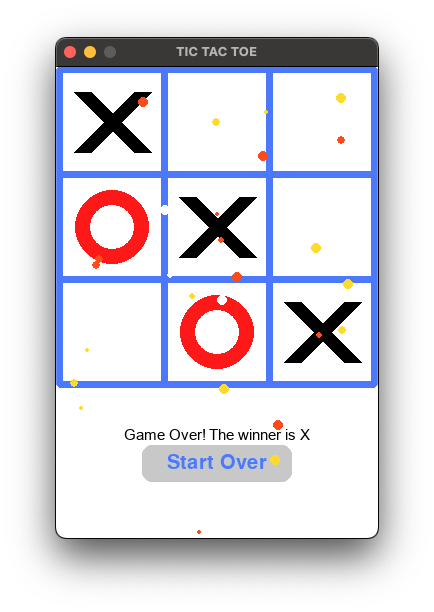

Tic Tac Toe
We're gonna continue on our `Tic Tac Toe` game developed from last semester.
This is a two-player game where each player takes turns to mark a square on a 3x3 grid.
The player who succeeds in placing three of their marks in a horizontal, vertical, or diagonal row wins the game.

This time, we're gonna make some adjustments so that human players can play against the computer.
Starter Code
Click to view or download the starter code for this project.